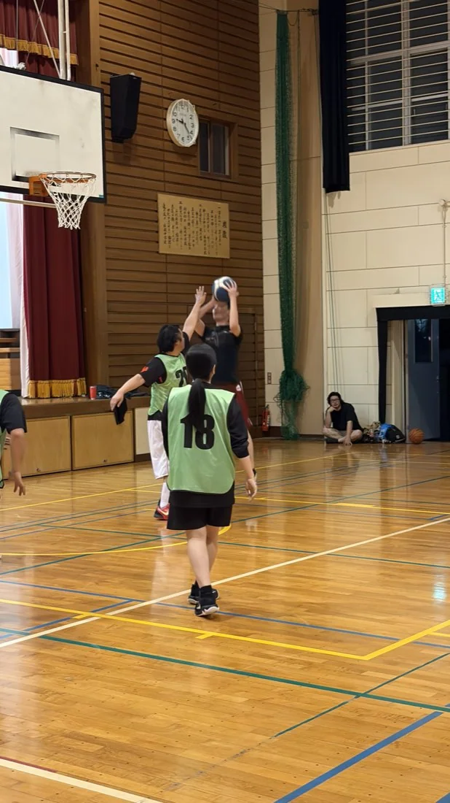
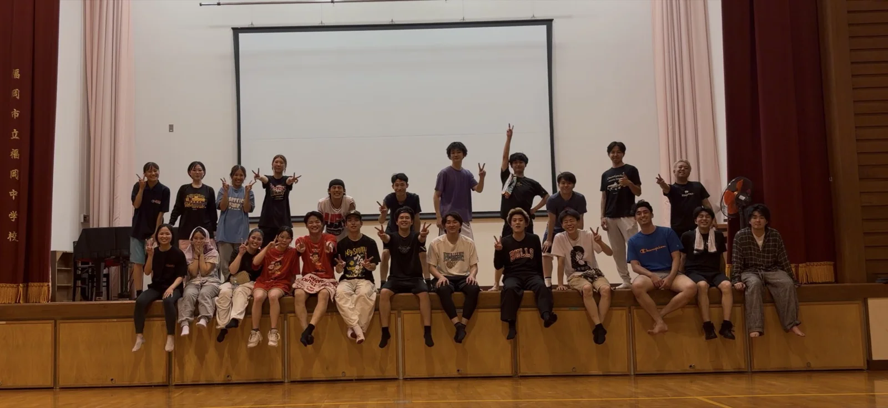
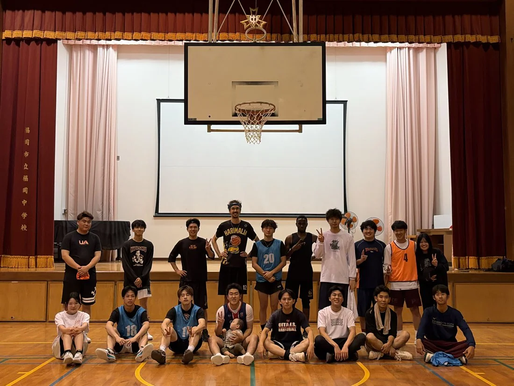
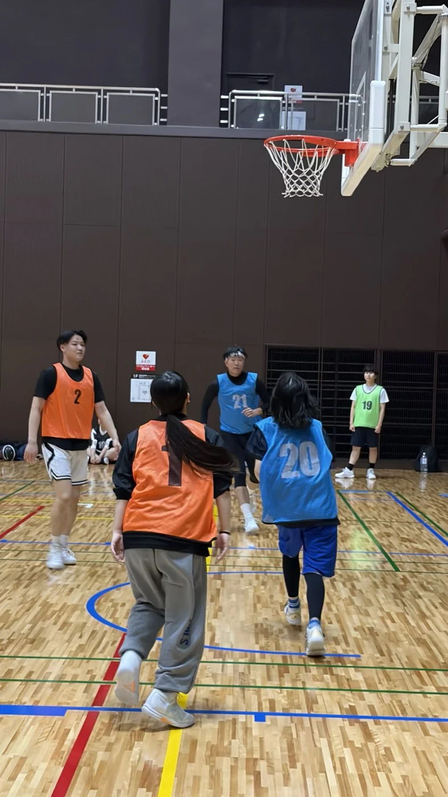

福岡の20代社会人バスケサークル
また、バスケが
ある日々へ。

20代社会人 ／ 経験者限定
福岡市内 ／ 体育館で活動
1回 500 円 ／ 都度払い
仕事終わりが、
待ち遠しくなる。
最後にシュートを打ったのは、いつだろう。
バスケは好き。でも、やる場所がない。
そんな20代の社会人へ。
p.b.qは、福岡市内で活動するバスケサークルです。部活やサークルでプレーしていた人が、仕事終わりに集まって、またバスケを楽しめる場所をつくっています。
久しぶりでも、一人でも。
「またやりたい」を、次の練習で。


一人で来ても、一緒にバスケ。
ブランクがあっても、
バスケが好きなら。
何年ぶりでも、歓迎です。
学生時代の部活やサークルでの経験があればOK。今の自分で、またプレーする楽しさを。
一人参加も、気兼ねなく。
友だちと予定を合わせなくても大丈夫。一人でも、女性でも参加しやすい雰囲気づくりを大切にしています。
まずは、1回から。
参加費は1回500円の都度払い。日程を見て、参加できる日に体験を申し込めます。
参加条件・料金
参加条件と費用をまとめました。
開催日時・会場は公式LINEで確認できます。
500円
都度払い・事前決済なし- 対象
- 20代の社会人・男女歓迎学生の方は対象外です。
- 経験
- 部活・サークルでのバスケ経験がある方ブランクの年数は問いません。初心者の方は対象外です。
- 場所
- 福岡市内の体育館福岡中学校・市営体育館など。会場は日程によって異なります。
- 日程
- 公式LINEで練習日程を確認参加したい日を選んで、体験をお申し込みください。
- キャンセル
- 当日でもキャンセル料無料予定が変わった際は、キャンセルの手続きをお願いします。
次の練習へ、
3ステップ。
日程の確認から体験申込みまで、公式LINEで。
まずは、参加できる日を探してみてください。
- 01
公式LINEを
友だち追加下のボタンから、p.b.qの公式LINEへ。
- 02
練習日程を
チェック開催日時と会場を見て、参加できる日を選びます。
- 03
体験を申し込んで、
体育館へ参加したい日に申込み。久しぶりのバスケを楽しもう。
05 — QUESTIONS
よくある質問
何年もバスケをしていなくても参加できますか？
はい。学生時代に部活やサークルでの経験があれば、ブランクの年数は問いません。経験者を対象としているため、初心者の方は参加対象外です。
一人で参加しても大丈夫ですか？
一人参加も歓迎しています。友だち同士でなくても参加できます。初めての方や女性も参加しやすい雰囲気づくりを大切にしています。
参加費の事前決済は必要ですか？
事前決済はありません。参加費は1回500円の都度払いです。
いつ、どこで開催していますか？
福岡中学校や市営体育館など、福岡市内で活動しています。開催日時と会場は日程によって異なるため、公式LINEで最新の練習日程をご確認ください。
申込み後に予定が変わったら？
当日でもキャンセル料無料です。参加できなくなった場合は、キャンセルの手続きをお願いします。
